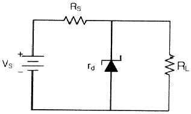
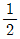
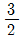
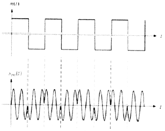
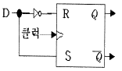
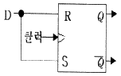
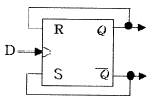
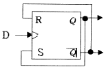
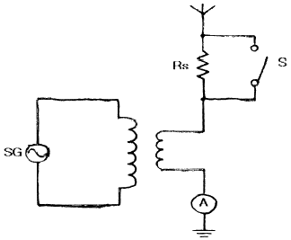
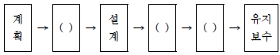

무선설비산업기사 (2018-04-28 기출문제)
1과목: 디지털 전자회로
1. 다음 그림은 정전압 회로이다. 이 회로의 전압안정계수를 0.02로 하고자 하는데 필요한 저항 RS의 값은? (단, 제너 다이오드의 내부저항은 30[Ω]이고, 부하저항은 RL=∞로 한다.)

- 1.0[㏀]
- 1.5[㏀]
- 2.0[㏀]
- 2.5[㏀]
(정답률: 77%)

2. 전원 주파수가 60[Hz]인 정류회로에서 출력이 120[Hz]인 리플 주파수를 나타내는 회로방식은 무엇인가?
- 3상 반파정류회로
- 3상 전파정류회로
- 단상 반파정류회로
- 단상 전파정류회로
(정답률: 88%)
3. FET 증폭기에 있어서 AV=30, Cgd=1[pF], Cgs=10[pF]일 때의 등가입력용량은 얼마인가?
- 27[pF]
- 41[pF]
- 48[pF]
- 84[pF]
(정답률: 76%)
4. 다음 중 부궤환 증폭기의 장점에 대한 설명으로 틀린 것은?
- 이득이 증가한다.
- 잡음이 감소한다.
- 비직선 일그러짐이 감소한다.
- 주파수특성이 개선된다.
(정답률: 75%)
5. 다음 중 에미터 플로워(Emitter Follower)의 특징이 아닌 것은?
- 입출력임피던스가 대단히 높다.
- 부하저항이 변화해도 전류, 전압, 전력이득을 일정하게 유지할 수 있다.
- 전압이득은 1에 가깝다.
- 전류이득이 크다.
(정답률: 62%)
6. 송신기의 완충증폭기(Buffer Amp)에 많이 쓰이는 증폭 방식은?
- A급
- B급
- C급
- AB급
(정답률: 83%)
7. 이상형 RC 발진기에서 궤환 네트워크(Feedback Network)의 입·출력 위상차는?
- 45°
- 90°
- 180°
- 360°
(정답률: 83%)
8. 다음 중 CR형 발진기에 대한 설명으로 틀린 것은?
- LC동조회로를 사용하지 않는다.
- 발진주파수는 CR의 시정수에 의해 정해진다.
- C와 R을 사용하여 부궤환에 의해 발진한다.
- 저주파 발진 파형이 깨끗하다.
(정답률: 78%)
9. 다음 중 PCM에서 미약한 신호는 진폭을 크게하고 진폭이 큰 신호는 진폭을 줄이는 기능을 무엇이라 하는가?
- 프리엠퍼시스(Pre-emphasis)
- 압신(Companding)
- 디엠퍼시스(De-emphasis)
- FM 복조시의 리미팅(Limiting)
(정답률: 85%)
10. 다음 중 PCM의 장점이 아닌 것은?
- 전송 구간에 잡음이 누적되지 않는다.
- 장거리 전송으로 고품질 통신이 가능하다.
- 전송로의 손실 변동 영향이 없다.
- 점유주파수 대역폭이 넓다.
(정답률: 73%)
11. 진폭변조에서 변조율이 100[%]인 경우, 피변조파의 전력은 반송파 전력의 몇 배가 되는가? (단, Pm : 피변조파의 전력, Pc : 반송파의 전력)
- Pm = Pc
- Pm = 2Pc
- Pm =

Pc - Pm =

Pc
(정답률: 76%)
12. 다음의 파형은 디지털 변조 방식의 파형이다. 어느 방식의 파형인가?

- ASK
- FSK
- PSK
- QAM
(정답률: 73%)
13. 쌍안정 멀티바이브레이터 회로에서 저항에 병렬로 접속된 콘덴서의 주요 목적은?
- 증폭도를 높이기 위해
- 스위칭 속도를 높이기 위해
- 베이스 전위를 일정하게 하기 위해
- 이미터 전위를 일정하게 하기 위해
(정답률: 83%)
14. 듀티사이클(Duty Cycle)이 0.1 이고, 주기가 40[μs]인 경우 펄스폭은 몇 [μs] 인가?
- 10
- 4
- 3
- 1
(정답률: 88%)
15. 10진수 673을 16진수로 변환하면 얼마인가?
- 2B1
- 2A1
- 291
- 2C1
(정답률: 83%)
16. 3초과 코드 0111의 10진수 값과 그레이코드(Gray Code) 0111의 10진수 값을 각각 나열한 것은?
- 4, 5
- 5, 6
- 6, 7
- 7, 8
(정답률: 85%)
17. 다음 중 GAL(Generic Array Logic)과 PAL(Programmable Array Logic)에 대한 설명으로 옳은 것은?
- GAL은 재프로그램이 가능하다 PAL은 그렇지 않다.
- PAL은 재프로그램이 가능하나 GAL은 그렇지 않다.
- GAL과 PAL은 모두 재프로그램이 가능하다.
- GAL과 PAL은 모두 상호 연결을 위해 링크를 사용한다.
(정답률: 72%)
18. 다음 중 RS 플립플롭으로 구현된 D 플립플롭 회로는?




(정답률: 82%)
19. 3개의 입력 A, B, C 중 2개 이상이 1일 때 출력 Y가 1이 되는 다수결 회로의 논리식으로 맞는 것은?
- Y = AB + BC + AC
- Y = A × B × C
- Y = ABC
- Y = A + B + C
(정답률: 88%)
20. 2진 4단 리플 카운터는 몇 개의 펄스를 계수할 수 있는가?
- 4개
- 8개
- 16개
- 32개
(정답률: 85%)
2과목: 무선통신 기기
21. 다음 중 고니오메터(Goniometer)에 대한 설명으로 옳은 것은?(오류 신고가 접수된 문제입니다. 반드시 정답과 해설을 확인하시기 바랍니다.)
- LORAN-C에서 측위 정확성 향상용으로 사용한다.
- 레이다(RADAR)의 속도 측정용으로 사용한다.
- 방향탐지기(Radio Direction Finder)의 안테나 회전용으로 사용한다.
- 레이다(RADAR)의 송/수신 전환용으로 사용한다.
(정답률: 68%)
22. 다음 중 디지털 데이터 0과 1을 아날로그 통신망을 사용해 전송할 때 반송파의 위상에 실어 보내는 변조 기술은?
- ASK(Amplitude Shift Keying)
- FSK(Frequency Shift Keying)
- PSK(Phase Shift Keying)
- PCM(Pulse Code Modulation)
(정답률: 72%)
23. 다음 중 SSB 통신방식에 대한 설명으로 적합하지않은 것은?
- S/N비가 DSB에 비해 개선된다.
- DSB에 비해 인접 채널과의 사이에서 생기는 비트가 많아진다.
- DSB의 상하측파대 중 한 측파대만을 통신에 이용한다.
- 일반적으로 대역통과 여파기를 이용하여 원하는 측파대를 만든다.
(정답률: 69%)
24. 다음 중 정합 필터(Matched Filter)에 대한 설명으로 틀린 것은?
- 최적 임계치는 입력 신호에너지의 반과 같다.
- 본질적으로 비동기 검파기이다.
- 하나의 곱셈기와 하나의 적분기로 구현할 수있다.
- 필터 출력단에서 SNR(Signal to Noise Ratio)을 최대화 하는데 목적이 있다.
(정답률: 63%)
25. 다음 중 디지털 변복조 기기에 대한 설명으로 틀린 것은?
- 디지털 데이터를 아날로그 통신 전송망에서 사용하는 기기이다.
- 디지털 데이터에 의해 반송파의 진폭, 주파수, 위상을 변화시킨다.
- 수신기는 송신측의 반송파와 같은 반송파를 이용하는 동기 검파가 있다.
- 과변조를 실시하면 신호의 찌그러짐이 많이 발생한다.
(정답률: 68%)
26. 다음 중 고속영상전송이 가능한 이동통신 기술은?
- CDMA 1X 기술
- GSM 기술
- LTE-A 기술
- AMPS 기술
(정답률: 90%)
27. 마이크로파 다중통신방식에서 전파손실을 경감시키기 위한 반사판 사용방법 중 적절치 못한 것은?
- 입사가 얕은 경우는 반사판을 2장 사용한다.
- 반사점에서 입사각과 반사각은 각각 90°로 한다.
- 반사판의 위치는 송수신점 사이의 중앙부근에 둔다.
- 반사판의 면적을 크게 한다.
(정답률: 77%)
28. 다음 중 다원 접속 방법에서 이용되는 확산 대역 기법의 종류가 아닌 것은?
- 직접 확산(DS)
- 주파수 도약(FH)
- 위상 도약(SH)
- 시간 도약(TH)
(정답률: 66%)
29. 다음 중 무지향성 안테나는?
- 파라볼라 안테나(Parabola Antenna)
- 다이폴 안테나(Dipole Antenna)
- 루프 안테나(Loop Antenna)
- 휩 안테나(Whip Antenna)
(정답률: 67%)
30. 위성을 제어하기 위해서 위성에 있는 각 장치에 대한 상태와 위성의 위치 등을 지구국에 송신하는 기능을 수행하는 장치는?
- 텔레메트리 시스템
- 트랜스폰더 시스템
- 추진 시스템
- 자세궤도 제어 시스템
(정답률: 85%)
31. 다음 중 위성통신에 관한 일반적인 사항으로 틀린 것은?
- 주로 SHF(Super High Frequency)대를 이용하고 위성에 의한 원거리 통신을 한다.
- 위성통신시스템에서는 다중화기술의 채택이 불가능하다.
- 마이크로웨이브 통신방식과 유사한 전파 가시거리 통신이다.
- 정지궤도에 떠있는 통신위성은 중계소 역할을 한다.
(정답률: 84%)
32. 다음 중 인버터에서의 전압원의 전압 혹은 전류원의 전류 진폭을 바꾸고, 출력을 제어하는 방식은 무엇인가?
- PWM(Pulse Width Modulation)
- PPM(Pulse Phase Modulation)
- PDM(Pulse Density Modulation)
- PAM(Pulse Amplitude Modulation)
(정답률: 73%)
33. 다음 중 무선통신망에 사용되는 전원설비를 계통 순서에 따라 올바르게 나열한 것은?
- 전력량계-주분전함-정류기-통신장비
- 전력량계-정류기-주분전함-통신장비
- 정류기-주분전함-전력량계-통신장비
- 정류기-전력량계-주분전함-통신장비
(정답률: 67%)
34. 극판의 연결 상태나 전지의 연결 상태의 차이로 생기는 충전 부족을 보충하기 위한 충전방식은?
- 과 충전
- 평상 충전
- 균등 충전
- 부동 충전
(정답률: 87%)
35. 다음 그림과 같이 결선하여 안테나의 실효저항을 측정하고자 한다. 회로에서 신호발생기(SG)의 주파수를 안테나에 공진시키고 스위치 S를 닫았을 때 A의 지시가 6[A], 스위치 S를 열었을 때 4[A]이면 안테나의 실효저항(Re)은 얼마인가? (단, RS는 10[Ω]이며, A의 내부저항은 무시한다.)

- 20[Ω]
- 30[Ω]
- 40[Ω]
- 50[Ω]
(정답률: 61%)
36. 급전선에서 부하저항으로 70[Ω]을 연결하고 측정된 반사계수 값이 0.5인 경우 급전선의 특성임피던스는 약 얼마인가?
- 7[Ω]
- 23[Ω]
- 33[Ω]
- 55[Ω]
(정답률: 65%)
37. 다음 중 측정기기 사용법에 대한 설명으로 틀린것은?
- 전원을 연결하기 전에 먼저 전원공급 장치의 출력전압과 측정기기의 정격전압이 같은지 확인한다.
- 측정 전에 측정기기의 지침이 “0”에 있는지 확인한다.
- 측정하기 전에 먼저 측정기기의 측정범위 설정 스위치가 적절한 범위에 있는지 확인한다.
- 측정범위를 모를 때는 측정범위 설정 스위치를 제일 낮은 범위로 설정하고 측정을 시작한다.
(정답률: 89%)
38. 다음 중 무선수신기에 고주파증폭기를 사용하는 목적으로 적합하지 않은 것은?
- S/N비를 향상시킨다.
- 감도를 높인다.
- 페이딩 효과를 경감시킨다.
- 수신안테나와 수신기와의 결합을 용이하게 한다.
(정답률: 71%)
39. 120[MHz]인 반송파를 20[kHz]인 신호파로 FM 변조 했을 때 최대 주파수 편이가 100[kHz]이면 변조지수는 얼마인가?
- 6
- 5
- 4
- 3
(정답률: 75%)
40. 수신기의 종합 전압이득을 구하기 위하여 수신기의 출력을 50[mW]로 조정하고 출력전압이6[V], 입력전압이 60[uV]였다면 이 수신기의 종합전압이득은?
- 1[dB]
- 10[dB]
- 100[dB]
- 1,000[dB]
(정답률: 76%)
3과목: 안테나 개론
41. 다음 중 전파의 성질에 대한 설명으로 틀린것은?
- 전파는 종파이다.
- 전파는 균일 매질에서는 직진한다.
- 주파수가 낮을수록 회절하는 성질이 있다.
- 굴절률이 다른 매질의 경계면에서는 빛과 같이 반사하고 굴절한다.
(정답률: 89%)
42. 전자파의 단파 주파수 범위에 해당하는 파장범위는?
- 0.1[m]~1[m]
- 1[m]~10[m]
- 10[m]~100[m]
- 100[m]~1,000[m]
(정답률: 85%)
43. 다음 중 전력과 정재파비(VSWR) 관계에서 VSWR=1.5이면 공급전력의 몇 [%]가 부하에서 소모되는가? (단, 송전단 공급전력은 정합된 경우로 가정함)
- 81[%]
- 86[%]
- 91[%]
- 96[%]
(정답률: 65%)
44. 다음 중 안테나와 급전선간 부정합시 문제점이 아닌 것은?
- 송신기의 동작이 불안정해 진다.
- 반사손실(부정합손실)이 증가한다.
- 급전선의 절연이 파괴된다.
- 최대 전송전력이 증가한다.
(정답률: 80%)
45. 다음 중 도파관의 특성에 대한 설명으로 틀린것은?
- 저항 손실이 적다.
- 복사 손실이 없다.
- 유전체 손실이 없다.
- 취급할 수 있는 전력이 크다.
(정답률: 51%)
46. 금속봉(Post)에 의한 도파관의 정합에서 금속봉의 길이(L)를 λ/4로 할 경우 어떤 성분이 되는가?
- 유도성이 된다.
- 공진한다.
- 용량성이 된다.
- 감쇠기가 된다.
(정답률: 76%)
47. 다음 급전선 중 외부잡음의 영향을 가장 적게 받는 것은?
- 단선식
- 평행 2선식
- 평행 4선식
- 동축케이블
(정답률: 85%)
48. 특성임피던스가 50[Ω]인 전송선로에 75[Ω]의 부하를 접속하였을 때 반사계수는 얼마인가?
- 0.1
- 0.2
- 0.3
- 0.4
(정답률: 72%)
49. 다음 중 사용하고자 하는 주파수의 파장을 λ, 안테나의 공진파장을 λ0라고 할 때, λ ＞ λ0인 경우 안테나를 공진시키기 위해 추가로 삽입하기 적합한 소자는?
- 제너(Zener) 다이오드
- 저항
- 단축 콘덴서
- 연장 코일
(정답률: 81%)
50. 빔 안테나의 소자수를 2배로 하면 이득은 어떻게 변화하는가?
- 2배
- 3배
- 4배
- 8배
(정답률: 77%)
51. 수직 접지 안테나의 높이가 λ/4보다 낮은 경우 안테나의 방사저항은?
- λ/4인 경우보다 작아진다.
- λ/4인 경우보다 커진다.
- λ/4인 경우와 같다.
- λ/2인 경우와 같다.
(정답률: 65%)
52. 인덕턴스가 25[μH], 정전용량이 40[pF]인 안테나가 있다. 이 안테나를 4[MHz]로 사용하기 위해서 연장코일의 인덕턴스는 얼마인가?
- 14.6[μH]
- 25[μH]
- 34.6[μH]
- 39.6[μH]
(정답률: 42%)
53. 다음 중 옳은 것은? (단, Pt는 송신기의 출력 전력, Gt는 송신안테나의 이득이다.)
- EIRP(dBm)=Pt(dBm)+Gt(dBd)
- EIRP(dBm)=Pt(dBm)-Gt(dBd)
- EIRP(dBm)=Pt(dBm)+Gt(dBi)
- EIRP(dBm)=Pt(dBm)-Gt(dBi)
(정답률: 74%)
54. 안테나와 가까운 지점에 지하수가 나올 정도의 깊이에 동판을 매설하며, 그 주변에 수분을 잘 흡수하는 목탄을 넣어 접지저항을 적게 하는 안테나 접지방식은?
- 심굴접지
- 방사상접지
- 다중접지
- 가상접지
(정답률: 86%)
55. 주어진 기지국과 이동국 사이의 거리 이내에서 이동국이 그 주변으로 이동할 때 지형의 변화로 인해 발생하는 페이딩은 어느 것인가?
- Short term fading
- Long term fading
- Rician fading
- Rayleigh fading
(정답률: 78%)
56. 다음 중 VHF대 이상의 전파가 초가시거리까지 전파되는 것과 관련이 없는 것은?
- 대류권 산란파
- 산재 F층 반사파
- 라디오 덕트(Radio Duct)
- 전리층 산란파
(정답률: 64%)
57. 어느 지점의 임계주파수가 6[MHz]일 때 8[MHz]에 대한 도약거리는? (단, F층의 높이를 400[km], 대지는 평면이다.
- 약 5⑤[km]
- 약 6⑤[km]
- 약 7⑤[km]
- 약 8⑤[km]
(정답률: 53%)
58. 가시거리 통신에서 두 지점간의 자유 공간 전파 손실이 130[dB]이었다. 이 상태에서 주파수를 1/4로 줄이고 거리를 2배로 하면 전파 손실은 얼마인가?
- 124[dB]
- 127[dB]
- 130[dB]
- 136[dB]
(정답률: 57%)
59. 두 개 이상의 안테나를 서로 떨어진 곳이 설치하고 두 출력을 합성하여 페이딩을 방지하는 방식은?
- 공간 다이버시티
- 주파수 다이버시티
- 편파 다이버시티
- 분할 다이버시티
(정답률: 84%)
60. 다음 중 전리층 반사를 사용하는 주파수대에서 최고 사용주파수(MUF)를 구하는 목적으로 맞는 것은?
- 전리층 반사파를 사용하여 통신하기 적합한 주파수를 구하는데 사용한다.
- 전리층의 밀도를 구하는데 사용한다.
- 전리층 반사파를 사용하는 경우의 전계강도를 구하는데 사용한다.
- 전리층 반사파가 도달되는 최고의 거리를 구하는데 사용한다.
(정답률: 72%)
4과목: 전자계산기 일반 및 무선설비기준
61. 다음 중 자료의 단위에서 File의 개념을 표현한 것으로 가장 올바른 것은?
- Record의 집합을 의미한다.
- Character의 수를 의미한다.
- Code의 집합을 의미한다.
- Field의 집합을 의미한다.
(정답률: 73%)
62. 다음 중 두 개의 입력을 받아서 합과 자리올림을 구하는 조합 논리회로는?
- 인코더
- 디코더
- 반가산기
- 멀티플렉서
(정답률: 80%)
63. 다음은 소프트웨어 시스템개발 모형이다. 빈칸에 들어갈 내용을 바르게 나열한 것은?

- 요구분석, Test, 구현
- 요구분석, 구현, Test
- Test, 요구분석, 구현
- 구현, Test, 요구분석
(정답률: 68%)
64. 다음 중 C 언어의 변수에 대한 설명으로 틀린것은?
- 변수는 값을 저장하는 기억장소의 주소, 길이, 타입의 세 가지 속성을 가진다.
- 변수 이름은 영어 알파벳 문자나 밑줄 문자(_)로 시작해야 한다.
- 변수 이름의 영문 대문자와 소문자는 서로 구별되지 않는다.
- C 언어의 키워드는 변수 이름으로 사용될 수 없다.
(정답률: 87%)
65. 다음 중 마이크로컨트롤러에 대한 설명으로 틀린것은?
- CPU와 RAM, ROM, I/O를 하나의 칩에 구현하였으며, MCU라고도 한다.
- 종류로는 CISC와 RISC가 있다.
- 임베디드 시스템에 널리 사용되고 있다.
- 연산부와 제어부로 구성되어 있으며, CPU 또는 MPU라고도 한다.
(정답률: 63%)
66. 다음의 운영체제 중에서 처리를 요구하는 자료가 발생할 때마다 즉시 처리하는 방식은?
- 오프라인 시스템
- 분산처리 시스템
- 실시간 처리 시스템
- 일괄처리 시스템
(정답률: 89%)
67. CPU 대신하여 I/O 장치와 Memory 사이의 데이터 전송을 담당하는 장치로써 CPU의 개입 없이 주변 장치와 주기억 장치와의 데이터 전송이 이루어지는 기법은?
- Interrupt Driven I/O
- Program Driven I/O
- DMA(Direct Memory Access)
- Polling
(정답률: 82%)
68. 다음 중 ROM과 RAM의 차이점을 설명한 것으로 틀린 것은?
- RAM은 휘발성 메모리라고 한다.
- EPROM은 한 번 쓰면 지울 수 없다.
- RAM은 동적 RAM과 정적 RAM으로 나눌 수있다.
- ROM의 종류에는 EPROM, EEPROM, PROM 등이 있다.
(정답률: 85%)
69. 다음 중 운영체제 기법에 대한 설명으로 틀린것은?
- 분산처리 시스템은 데이터를 여러 컴퓨터로 분산해서 사용하는 것을 말한다.
- 데이터베이스는 상호 연관 있는 데이터들의 집합과 처리를 말한다.
- 다중 프로세싱이란 여러 CPU를 같이 사용하는 것을 말한다.
- UNIX는 단일 사용자 환경을 제공한다.
(정답률: 81%)
70. 검색 방법 중 키 값으로부터 레코드가 저장되어 있는 주소를 직접 계산하여 산출된 주소로 바로 접근하는 방법으로 키-주소 변환 방법이라고도 하는 것은?
- 이진 검색
- 피보나치 기술
- 해싱 방법
- 블록 검색
(정답률: 82%)
71. 무선설비규칙에서 텔레비전 방송을 하는 방송국의 점유주파수대역폭의 허용치는?
- 5[MHz]
- 6[MHz]
- 7[MHz]
- 8[MHz]
(정답률: 67%)
72. 다음 중 방송통신발전기본법 시행령에서 정하는 주요 방송통신사업자에 해당하는 자는?
- 회선 수가 20만 이상인 자
- 회선 수가 30만 이상인 자
- 회선 수가 40만 이상인 자
- 회선 수가 50만 이상인 자
(정답률: 73%)
73. “방송통신기자재 등의 적합성평가에 관한 고시”의 주무부처는?
- 과학기술정보통신부
- 교육부
- 산업통상자원부
- 국토교통부
(정답률: 89%)
74. 다음 중 무선설비 설계업무 수행절차의 수행업무 내용으로 틀린 것은?
- 착수단계의 활동내용은 설계목적과 목표, 추진방안, 설계개요 및 법령 등 각종 기준을 검토한다.
- 준비단계의 활동내용은 예비타당성조사, 타당성조사 및 기본계획 결과의 검토를 행한다.
- 설계단계는 기본설계와 실시설계로 분류하며, 실시설계 활동내용으로 기본적인 구조물 형식의 비교ㆍ검토, 개략공사비 및 기본공정표를 작성한다.
- 설계심의단계의 활동은 설계목적 적합성 여부 심의, 자문단의 의견수렴 및 반영을 행한다.
(정답률: 75%)
75. 다음 중 미래창조과학부에서 전파자원의 공평하고 효율적인 이용을 촉진하기 위하여 시행하여야 할 사항이라 볼 수 없는 것은?
- 주파수 회수
- 주파수 재배치
- 주파수 공동 사용
- 주파수 국제 등록
(정답률: 69%)
76. 의무항공기의 예비전원은 항공기의 항행안전을 위하여 필요한 무선설비를 최소 얼마 이상 동작시킬 수 있는 성능을 가져야 하는가?
- 30분
- 1시간
- 1시간 30분
- 2시간
(정답률: 69%)
77. 다음 중 주파수할당을 하려는 때에 공고할 사항으로 잘못된 것은?
- 할당대상 주파수 및 대역폭
- 주파수할당 대가의 산출기준
- 주파수용도 및 기술방식
- 무선국 개설허가의 유효기간
(정답률: 69%)
78. 다음 중 정보통신공사 사용전검사 신청서의 기재사항이 아닌 것은?
- 신청인
- 시공자
- 감리인
- 공사 종류
(정답률: 73%)
79. 적합성평가를 받은 사실을 표시하지 않고 판매 ㆍ 대여한 자나 판매 ㆍ 대여할 목적으로 진열 ㆍ 보관 또는 운송하거나 무선국 ㆍ 방송통신망에 설치한 경우로서 1차 위반한 경우 과태로 부과기준은 얼마인가?
- 100만원
- 200만원
- 300만원
- 500만원
(정답률: 77%)
80. 다음 중 정보통신공사업법 시행령이 정하는 공사범위가 아닌 것은?
- 「방송법」등 방송관계법령에 따른 방송설비공사
- 수전설비를 포함한 정보통신전용 전기시설설비공사
- 전기통신관련법령 및 전파관계법령에 따른 통신설비공사
- 정보통신관계법령에 따라 정보통신설비를 이용하여 정보를 제어, 저장 및 처리하는 정보설비공사
(정답률: 78%)
전압안정계수 = (Vmax - Vmin) / (Vmax + Vmin)
여기서 Vmax와 Vmin은 부하저항이 없을 때의 출력전압의 최대값과 최소값을 의미한다.
부하저항이 없을 때, 출력전압은 다음과 같이 계산된다.
Vout = VZ = Vref - IZ × RS
여기서 Vref는 제너레이터의 전압, IZ는 제너레이터의 전류, RS는 저항값을 의미한다.
Vout의 최대값은 제너레이터의 전압 Vref와 같고, 최소값은 제너레이터의 전압 Vref에서 제너 다이오드의 내부저항 30[Ω]을 곱한 값만큼 감소한 값이다.
따라서,
Vmax = Vref
Vmin = Vref - IZ × 30[Ω]
전압안정계수가 0.02이므로,
0.02 = (Vref - (Vref - IZ × 30[Ω])) / (Vref + (Vref - IZ × 30[Ω]))
0.02 = (2 × IZ × 30[Ω]) / (2 × Vref)
Vref = 30 × IZ / 0.02
부하저항이 ∞일 때, 출력전압은 Vout = VZ = Vref이므로,
RS = (Vref - VZ) / IZ = (Vref - Vref) / IZ = 0[Ω]
따라서, 정전압 회로의 전압안정계수를 0.02로 하기 위해서는 저항 RS의 값은 1.5[㏀]이다.